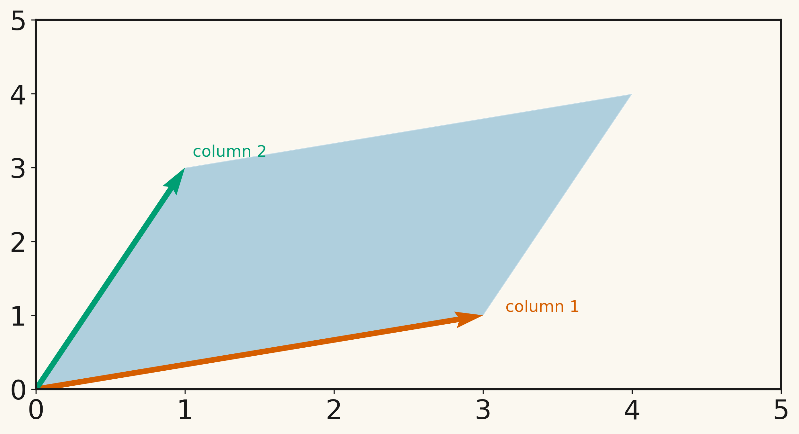
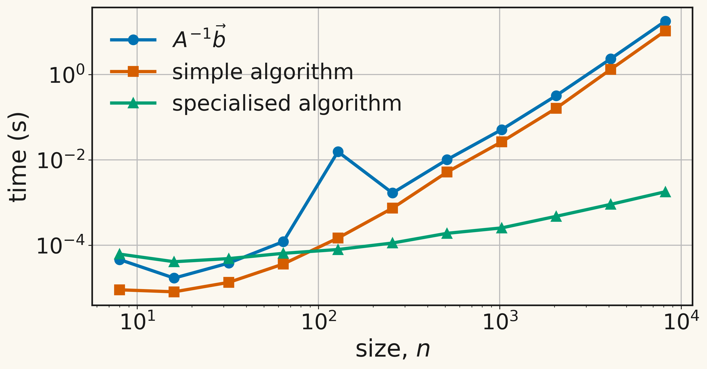
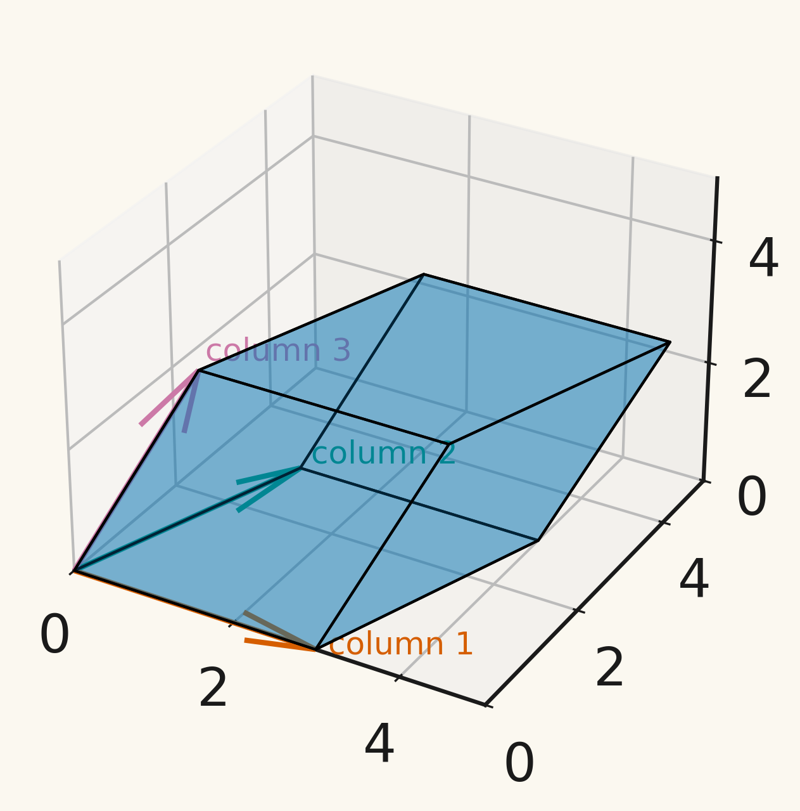

Introduction to systems of linear equations
Chapter 3
Given an \(n \times n\) matrix \(A\) and an \(n\)-vector \(\vec{b}\), find the \(n\)-vector \(\vec{x}\) which satisfies: \[\begin{equation} \label{eq:sle} A \vec{x} = \vec{b}. \end{equation}\]
We can also write \(\eqref{eq:sle}\) as a system of linear equations: \[\begin{align*} \text{Equation 1:} && a_{11} x_1 + a_{12} x_2 + a_{13} x_3 + \cdots + a_{1n} x_n & = b_1 \\ \text{Equation 2:} && a_{21} x_1 + a_{22} x_2 + a_{23} x_3 + \cdots + a_{2n} x_n & = b_2 \\ \vdots \\ \text{Equation i:} && a_{i1} x_1 + a_{i2} x_2 + a_{i3} x_3 + \cdots + a_{in} x_n & = b_i \\ \vdots \\ \text{Equation n:} && a_{n1} x_1 + a_{n2} x_2 + a_{n3} x_3 + \cdots + a_{nn} x_n & = b_n. \end{align*}\]
Module learning objective
We want to find a matrix \(A^{-1}\) such that \(A^{-1} A = A A ^{-1} = I_n\)
Then starting from \(A \vec{x} = \vec{b}\), we see
In two dimensions, the procedure is simple…
For \(A = \begin{pmatrix} a & b \\ c & d \end{pmatrix}\),
\[ A^{-1} = \frac{1}{ad - bc} \begin{pmatrix} d & - b \\ -c & a \end{pmatrix}. \]
Find the inverse of the matrix \(\begin{pmatrix} 3 & 1 \\ 1 & 3 \end{pmatrix}\).
Find the inverse of the matrix \(\begin{pmatrix} 2 & 1 \\ 3 & 4 \end{pmatrix}\).
There are general formulae for computing inverses of larger matrices but it turns out using these to solve systems of linear equations is a bad idea!

In the next few lectures, we will find alternative ways to solve systems of linear equations which do not explicity form the inverse of \(A\).
… there are very few circumstances in which one should compute \(A^{-1}\) … it is faster and more accurate to solve the system by LU factorization with partial pivoting than by inverting \(A\).
Nick Higham, Seven sins of numerical linear algebra
Module learning objective
One question we might ask when faced with a system of linear equations is: does this system of equations have a (unique) solution?
This is equivalent to asking does \(A\) have an inverse?
Let \(A\) be a square \(n \times n\) matrix.
If \(n = 2\), \[\begin{equation*} \det A = \det \begin{pmatrix} a_{11} & a_{12} \\ a_{21} & a_{22} \end{pmatrix} \end{equation*}\]
If \(n = 3\), \[\begin{align*} \det A & = \det \begin{pmatrix} a_{11} & a_{12} & a_{13} \\ a_{21} & a_{22} & a_{23} \\ a_{31} & a_{32} & a_{33} \end{pmatrix} \\ \end{align*}\]
For general \(n\), the determinant can be found by, for example, Laplace expansions \[ \det A = \sum_{j=1}^n (-1)^{j+1} a_{1,j} M_{1,j}, \] where \(a_{1,j}\) is the entry of the first row and \(j\)th column of \(A\) and \(M_{1,j}\) is the the determinant of the submatrix obtained by removing the first row and the \(j\)th column from \(A\).
\(A = \begin{pmatrix} 3 & 1 \\ 1 & 3 \end{pmatrix}\)
\(A = \begin{pmatrix} 3 & 1 & 1\\ 0 & 3 & 1 \\ 0 & 0 & 3 \end{pmatrix}\)
Compute the determinant of \[ \begin{pmatrix} 2 & -1 & 3 \\ 3 & 2 & -4 \\ 5 & 1 & 1 \end{pmatrix}. \]
For \(A\) given by \[ A = \begin{pmatrix} 3 & 1 \\ 1 & 3 \end{pmatrix} \] the columns form a parallelogram

For \(A\) given by \[ A = \begin{pmatrix} 3 & 1 & 1\\ 0 & 3 & 1 \\ 0 & 0 & 3 \end{pmatrix}, \] the columns form a parallelepiped

The determinant of a matrix \(A\) can be interpreted geometrically as the signed area, volume, or hypervolume of the parallelogram, parallelepiped, or higher-dimensional analogue generated by the columns of \(A\).
So if the area/volume/… of this shape is nonzero then the determinant is nonzero!
Let \(A\) and \(B\) be square \(n \times n\) matrices.
Theorem 1 The system of linear equations \(A \vec{x} = \vec{b}\) has a unique solution for any right hand side \(\vec{b}\) if and only if \(\det A \neq 0\).
Module learning objective
One important structure takes the form
\[ A = \begin{pmatrix} a_{11} & 0 & 0 & \cdots & 0 \\ a_{21} & a_{22} & 0 & \cdots & 0 \\ a_{31} & a_{32} & a_{33} & \cdots & 0 \\ \vdots & \vdots & \vdots & \ddots & \vdots \\ a_{n1} & a_{n2} & a_{n3} & \cdots & a_{nn} \end{pmatrix} \]
A is a lower triangular matrix. Every entry above the leading diagonal is zero:
\[ a_{ij} = 0 \quad \text{ for } \quad j > i. \]
The transpose of this matrix is an upper triangular matrix and can be treated in a very similar manner.
Sparse matrices are prevalent in any application which relies on some form of graph structure:
The \(a_{ij}\) typically represents some form of “communication” between vertices \(i\) and \(j\) of the graph, so the element is only nonzero if the vertices are connected.
There is no generic pattern for these entries, though there is usually one that is specific to the problem solved.
Usually, \(a_{ii} \neq 0\) - the diagonal is nonzero.
A “large” portion of the matrix is zero.
Many special techniques exist for handling sparse matrices, some of which can be used automatically within Python (scipy.sparse documentation)
In the next section we will discuss a general numerical algorithm for the solution of linear systems of equations.
This will involve reducing the problem to one involving a triangular matrix, which, as we show below, is relatively easy to solve.
In subsequent lectures, we will see that, for sparse matrix systems, alternative solution techniques are available.